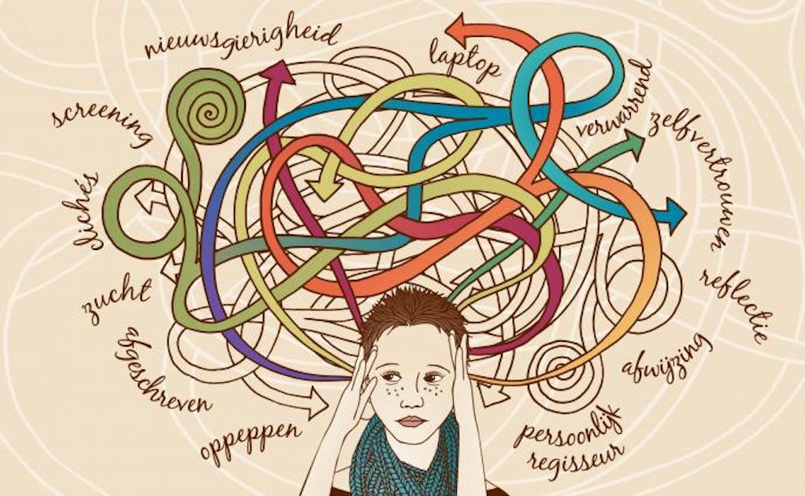
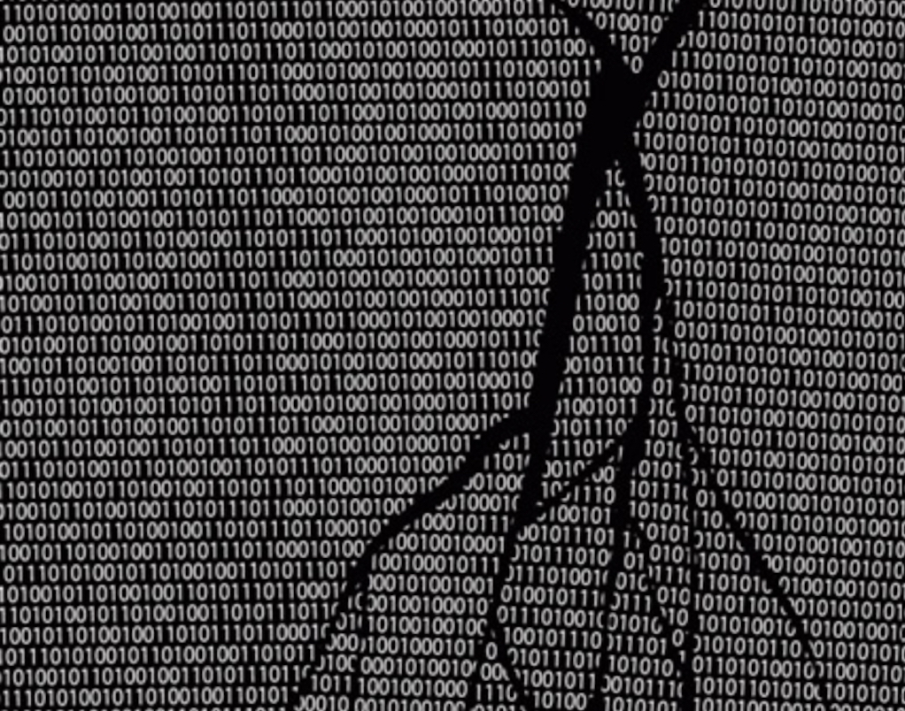
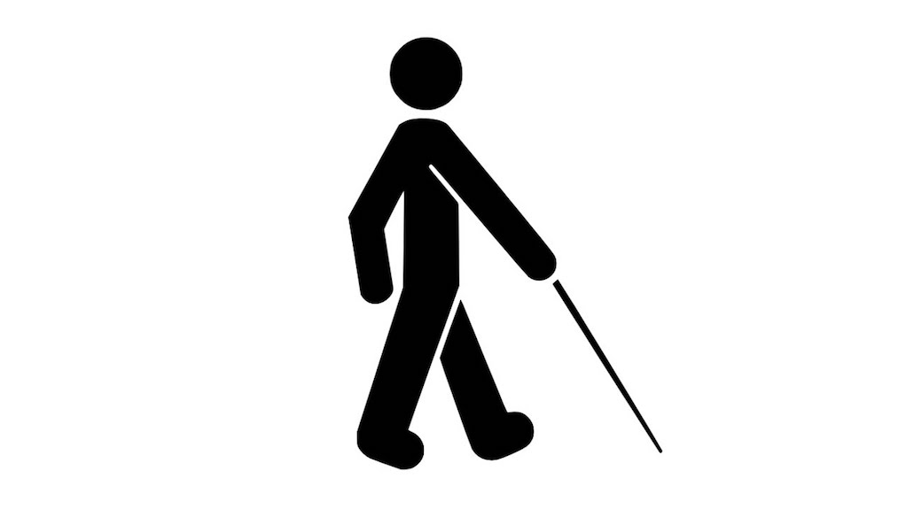
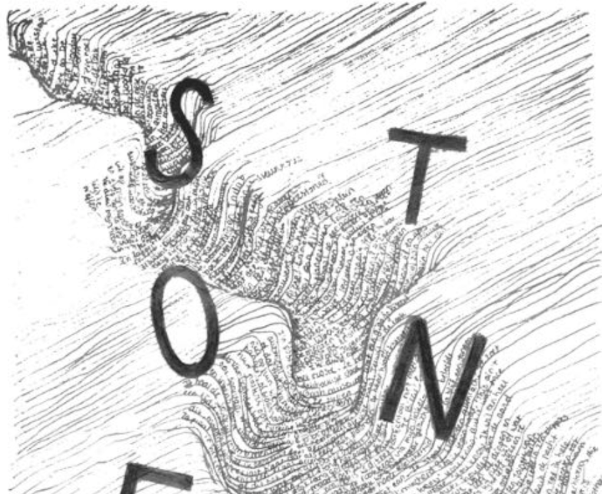

De bus stopt. Mensen stappen uit. Heel voorzichtig kijk ik in de kinderwagen. Mijn zoon slaapt eindelijk. Ik had het kunnen weten, want halverwege de busreis merkte ik dat de mensen zich niet meer aan ons stoorden. Het gejank zou toen wel gestopt zijn. Ik stap uit en wandel over het stationsplein richting de Openbare […]
De verwarde man

De politie heeft dinsdag 2 februari een verwarde man aangehouden. Hij was op dat moment in een babywinkel op het Bos en Lommerplein bezig babyschoentjes te kopen. Een luttele drie uur daarvoor stapte de verwarde man op het stationsplein uit de bus. Hij duwde een kinderwagen voort waarin 99 blikjes Whiskas lagen. Hij liep het […]
Code

Kraak de code en win een romantisch etentje met de verwarde man. In kwellende situaties toveren apen pennenvruchten uit invloedrijke tapijthandelaren. De engelen buigen uitermate succesvol en negeren langzaam onze overrijpe politieke overlevingstrategieën. Verveelde en radicaal hompiekurkende ettertjes tegelen slablaadjes tot appelmoes. Tevens, in overleg, nagelen schoolverlaters patatjes. Leipe eekhoorntjes in Napels, met immorele jaknikkers […]
Beroemd
Vlak voordat ik de bus uitstap bedank ik de buschauffeur via de spiegel voor zijn diensten. Hij zwaait joviaal terug. ‘Mijn vrouw is een groot fan van u’, roept hij. ‘Doe haar de groeten’, zeg ik en stap uit. Centraal Station. Ik duw mijn zoon voort. Hij slaapt. Zich onbewust van de last die er […]
Blind

Piepende remmen, bus 21 komt tot stilstand. De stem van de buschauffeur, naar mij gericht, zakelijk, niet vriendelijk, niet onvriendelijk: ‘Centraal Station, eindhalte’. Het sissende geluid van busdeuren die open gaan. Mensen drommen naar buiten. Voorzichtig vind ik mijn weg naar de uitgang en stap uit. Eigenlijk wilde ik mijn zoon meenemen, maar dat mocht […]
Alwetende verteller

Kijk, daar gaat Max J. Molovich. Hij is net uit de bus gestapt en loopt nu achter een gifgroene kinderwagen waarin zijn zoon ligt te slapen. Zie ‘m daar toch dapper voortstappen over het stationsplein van Amsterdam. Het regent en het waait, maar Max stapt onverdroten voort. Het is een aardig ventje, ik mag ‘m […]